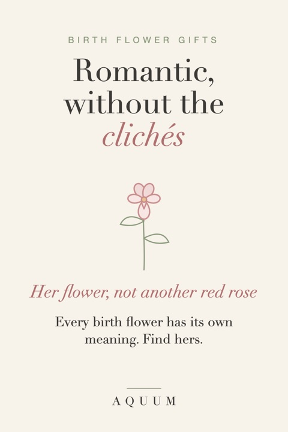

Birth Flower Gifts for Your Wife or Girlfriend: Romantic Without the Clichés
2026-09-30
Written by the team behind Aquum, a small birth flower gift shop. How we make money.

Red roses are the default for a reason, and that's exactly the problem: they say "romantic" without saying anything about her. Her birth flower does the opposite. It's hers by birth, it has its own meaning, and most people have never been told what it is.
Start with her flower
Find her birth month and read what her flower says. The month-by-month guide has all twelve. Some that land especially well between partners:
- February · Violet: quiet loyalty. A February gift that isn't another red heart.
- May · Lily of the Valley: the return of happiness, and a classic bridal bouquet flower. Lovely for an anniversary.
- June · Rose: love in all its forms. The obvious romantic flower, but different when it's her birth flower.
- July · Larkspur: an open heart and a strong bond.
- December · Paperwhite: good wishes for what's ahead, for a partner starting something new.
Make it about the two of you
- Pair her flower with yours. Two flowers side by side on one print, or one each on matching mugs.
- Add a date. The day you met, your wedding, the day you moved in together. A small detail she'll notice every time.
- Use the meaning in the card. One line about what her flower stands for, and one line about where you see that in her.
Gifts she'll use
- A soft shirt with her flower for weekends and slow mornings.
- A mug for the coffee you make her, or the one she makes you.
- A tote for the farmers market or the library.
- Bulbs or seeds of her flower if she gardens: it comes back every year, like you.
For Christmas, Valentine's or her birthday?
For her birthday, her own flower is the natural choice. For Valentine's Day, the violet (February's flower) is the quiet alternative to roses. For Christmas, a pair of flowers, hers and yours, turns a gift into something about the two of you. Made-to-order gifts take about a week to make and ship in the US, so order by mid-December for Christmas, and more ideas are in our Christmas gift guide.
Celebrating a date? See birth flower anniversary gifts.